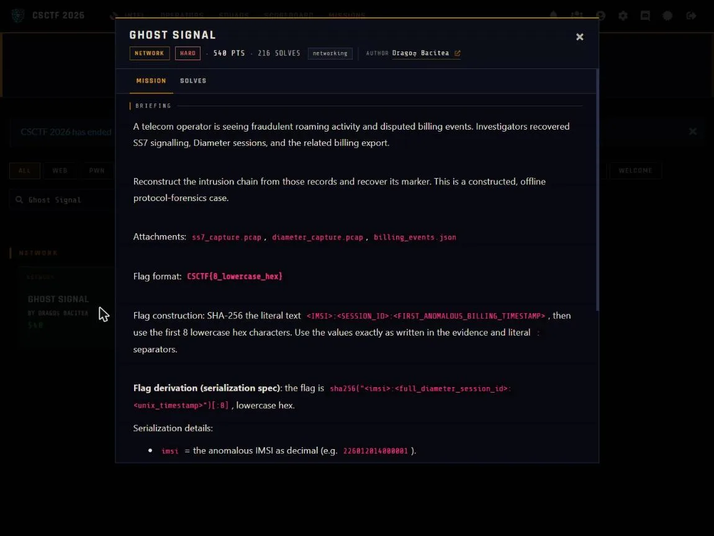

01Start point: catalogue the three files
- What I found: ss7_capture.pcap holds SS7 MAP messages over M3UA (the 2G/3G roaming signalling layer). diameter_capture.pcap holds Diameter requests and answers between the CSCFs and the HSS (the LTE/IMS side). billing_events.json is the OCS billing export (provider eastern-tele.ro).
- Thinking: the flag needs an IMSI, a session ID and a timestamp, and three artifacts each probably hold one piece, so the plan is to find a value that appears in all three.
- Result: three sources to cross-reference.

02Pivot: find the one hidden identity
- What I found: in the billing export every normal subscriber has a 16-digit IMSI (2260120140002xxx), but one IMSI is only 15 digits: 226012014000001. Every event carrying an anomaly field belongs to it, all within a single session hss.eastern-tele.ro;1723740150;49211 (zero_charge_on_roaming writes and an unusual_routing_path pivot).
- Thinking: the malformed IMSI is the odd one out, so it is the attacker's thread to pull.
- Result: candidate IMSI and session ID.
03Pivot: trace the identity through both captures
- What I did: SS7 MAP stores the IMSI as TBCD (nibble-swapped, f-padded), so I decoded the length-8 IMSI fields. In Diameter I searched the same IMSI.
- Thinking: confirming the IMSI in both captures before trusting the billing record proves the thread.
- Result: 226012014000001 appears in 5 SS7 messages, so first contact is on the SS7 side. It appears in 4 Diameter messages in the same session 49211, where the request comes from cscf.rogue.evil-domain.net and the answer redirects to a pivot CSCF with diameter://intercept-49211.evil-domain.net.
04Result: build the marker
- What I did: the billing events are not stored in time order, so I sorted by timestamp. The first anomalous event is at 1723740150. I hashed 226012014000001:hss.eastern-tele.ro;1723740150;49211:1723740150 and took the first 8 hex, 28358943.
- Thinking: sorting matters because the marker depends on the earliest anomalous timestamp, not the first one in the file.
- Result: running python -I solve.py prints IMSI 226012014000001 (SS7 x5, Diameter x4), the session, the first anomalous timestamp 1723740150 and CSCTF{28358943}.